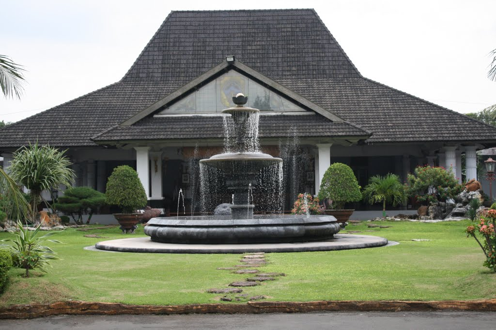
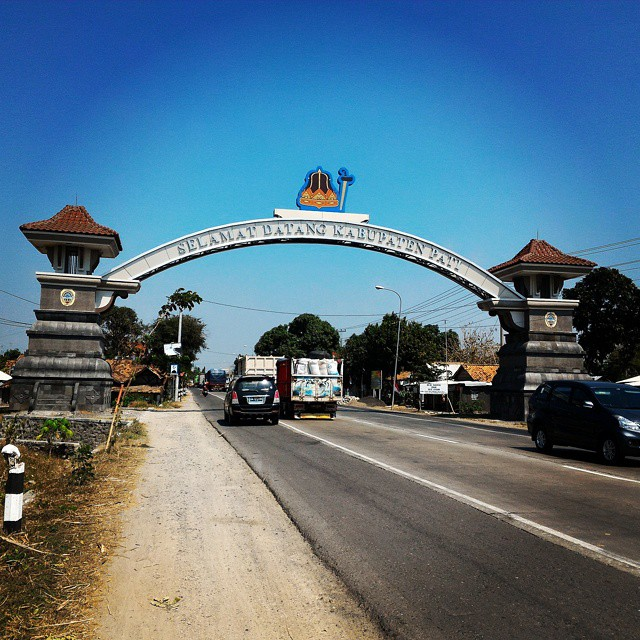

Sejarah

Kota Pati pada zaman dahulu merupakan sebuah kerajaan sendiri, yang pada waktu ini menjadi daerah kekuasaan majapahit, dan kemudian di ambil alih oleh mataram.
ejarah
Kota Pati pada zaman dahulu merupakan sebuah kerajaan sendiri, yang pada waktu ini menjadi daerah kekuasaan majapahit, dan kemudian di ambil alih oleh mataram.
1.Pintu Gerbang Majapahit
2.Genuk Kemiri
Geografis

Sebagian besar wilayah Kabupaten Pati adalah dataran rendah. Bagian selatan (perbatasan dengan Kabupaten Grobogan dan Kabupaten Blora) terdapat rangkaian Pegunungan Kapur Utara. Bagian barat laut (perbatasan dengan Kabupaten Kudus dan Kabupaten Jepara) berupa perbukitan. Sungai terbesar adalah Kali Juwana, yang bermuara di daerah Juwana.
Ibukota Kabupaten Pati terletak tengah-tengah wilayah Kabupaten, berada di jalur pantura Semarang-Surabaya, sekitar 75 km sebelah timur Semarang. Jalur ini merupakan jalur ramai yang menunjukkan diri sebagai jalur transit. Kelemahan terbesar dari jalur ini adalah kecilnya jalan, hanya memuat dua jalur, sehingga untuk berpapasan cukup sulit.
Terdapat sungai besar yaitu sungai Ngantru. Saat musim penghujan sudah terbiasa sungai ini meluap, sehingga pemerintah Jawa Tengah membentuk lembaga yang berfungsi menanggulangi banjir yang bernama Jatrunseluna.